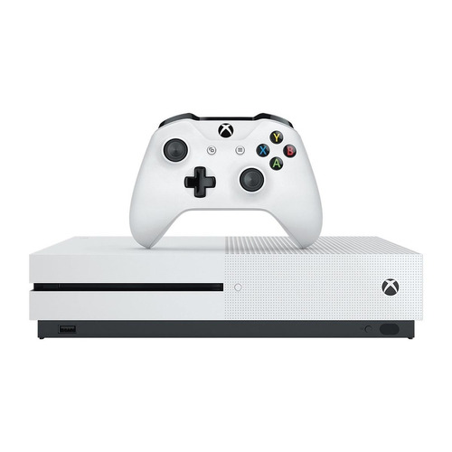

Post #1
Xbox network, anteriormente Xbox Live é um serviço de entrega de mídia digital e jogos multijogador online criado e operado pela Microsoft, no qual permite aos jogadores conectarem e jogarem entre si com muitas funcionalidades, tais como: download de bônus para jogos, criação de perfis, torneios, chat por voz, etc